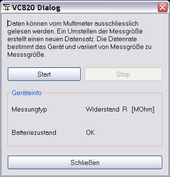

Der VC8x0 Gerätedialog dient zum entfernten Auslesen der am Gerät eingestellten Messgröße. Daten, können ausschließlich empfangen werden, wobei das Gerät mit der eingestellten Messgröße die Zeit zwischen zwei Messungen bestimmt. Zusätzlich wird der Batteriezustand angezeigt.
Nachdem der serielle Schnittstelle über den Geräteauswahldialog eingestellt ist und dieser Gerätedialog aufgerufen wurde, werden nach drücken von „Start“ zyklisch Werte aus dem Gerät abgerufen und angezeigt. Genauso gut kann auch der "Start Aufnahme" Knopf in der Toolbar benutzt werden, ohne das diese Dialog geöffnet wird.

Schaltet man am Gerät die Messgröße um, wird automatisch ein neuer Datensatz angelegt.
Durch drücken des "Stop"-Knopfes wird die Datenaufnahme abgebrochen.